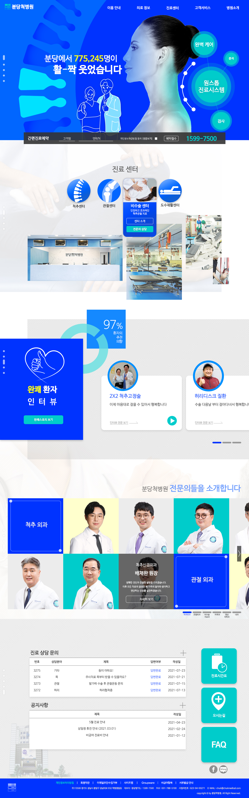
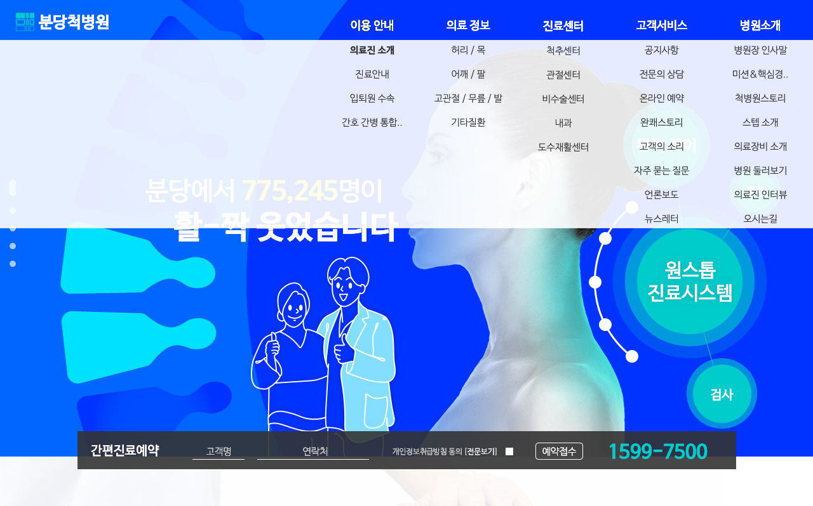
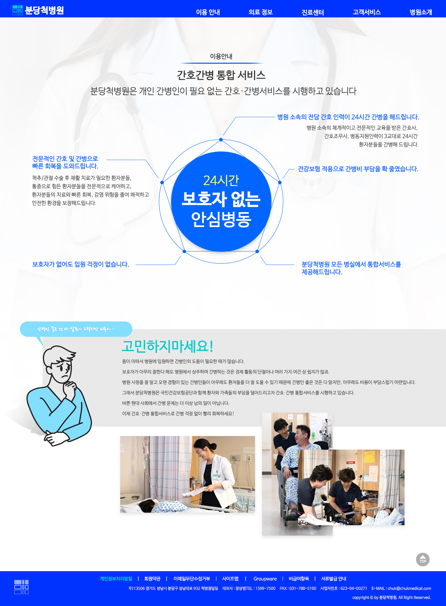

분당척병원UI/UX Design
Overview
척추정형외과 전문인 분당척병원 사이트를 리뉴얼하였습니다.
병원의 전문성을 보여주면서 방문자로 하여금 친근함 느낌을 느낄 수 있도록, 자체 일러스트 드로잉을 부분적으로 활용하였습니다.
병원의 전문성을 보여주면서 방문자로 하여금 친근함 느낌을 느낄 수 있도록, 자체 일러스트 드로잉을 부분적으로 활용하였습니다.
-
- 작업 기여도
- 개인작업 100%
-
- 작업 프로그램


Concept
- Analysis
- 척추정형외과 전문병원이며, 허리 통증 완쾌 스토리를 주 포인트로 하고 있습니다.
- Design Concept
- 병원에 대한 방문 거부감을 감소시키기 위하여 딱딱한 사진 위주였던 이전 웹페이지를 일러스트 드로잉을 활용하여 친근하게 환기시켰습니다. 동시에 파란색 계열 색상을 주 컬러로 사용하여 신뢰감은 유지하였습니다.
- Keyword
-
- # 친근함
- # 신뢰감
- # 전문성
- Mood Board
- Color
-
- #0033FF
- #0066FF
- #00CCCC
- #E9E9E9
- #FDFCFB
- Typo
-
- 나눔바른고딕 Bold
- 나눔바른고딕 Medium
- 나눔바른고딕 Light
- 나눔바른고딕 ExtraLight
Work Process
일러스트 드로잉을 활용하였습니다.
Output
Main Display(width * height) : 1280px * 4100px
Sub Display(width * height) : 1280px * 1740px
Sub Display(width * height) : 1280px * 1740px
- MainPage
- 페이지 진입 시 비주얼 내 '775,245'
숫자 1부터 카운팅되는 애니메이션 적용 - 진료센터 픽토그램 마우스 오버 시
상세 페이지 진입 형태로 변경 - 인물사진 별 마우스 오버 시
상세 소개 노출 - TopMenu Hover
- SubPage
- 
- 
- 
- 탑 메뉴 상단 고정
- 진료예약 퀵메뉴 비주얼 내 삽입
(비고정형) - 슬라이드 버튼 클릭 시
그리드 너비기준 4개씩 이동 - 사용자 입장
병원의 주 필요 서비스 메인페이지 노출 - 탑메뉴 호버 시 풀다운 메뉴 노출